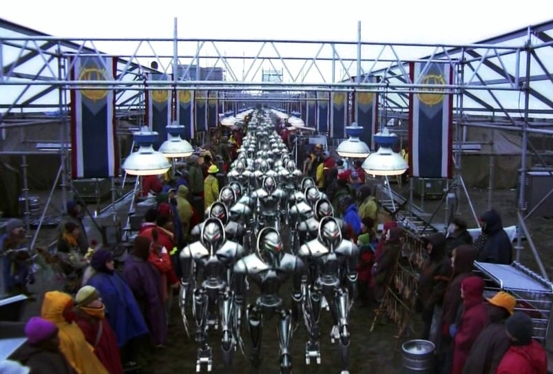

Galactica was one of the first twelve Galactica type battlestars to be constructed by the Colonials,
each representing one of the twelve colonies; Galactica represented Caprica..
YR 50
Entering service sometime prior to the tenth year of the War,
Galactica's primary duties included planetary defense, and border patrol. Due to heavy losses on the Colonial side, Galactica at this
point in time was drafted into battle duty.
YR 55
Two years later Galactica participated in Operation Raptor Talon, along with Columbia and one other battlestar of its class.
It was successful in inflicting major damage to Cylon forces, but not before they were able to destroy Columbia.
YR 60
With this victory comes many more for the Twelve Colonies, to the point in which the Cylons suddenly call for a ceasefire
that is signed and put into motion immediately.
YR 80
Some twenty years later, the Galactica, now a museum and memorial to the Cylon War, is suddenly put back into combat readiness
with the breaking of the armistice on the Cylons behalf. The Cylons nuke the Twelve Colonies forcing William Adama, commander of the Galactica,
to make an emergency FTL jump to a hidden weapons depot.
YR 81
With the Colonies now destroyed and no other battlestars that survived the attack, the Galactica rendesvous with several civilian, cargo,
and agriculture ships, unifying this ragtag group in order to guide them to a new home.
YR 83
The Galactica and survivors happen upon a habitable planet in which for a time they are safe, until the Cylons find them and then place them all
under tyrannical rule, save for the Galactica which jumps to unknown space in order to recoup and come back to rescue the oppressed.
YR 85
With the successful rescue of the survivors, the Galactica embarks on a mission with a newly discovered battlestar, the Pegasus, to the Cylons homeworld.
In a battle alongside a rebel faction of Cylons, the Galactica and the Pegasus destroy the Cylons, and jump unknowingly to a system with a planet
capable of sustaining life, this planet is Earth.
YR ????
The members of the Galactica and the remainder of the survivors from the Colonies settle down on Earth, relenquishing the technology in which has plagued them for centuries
and programs the remaining ships to cruise into the Sun, bringing in a new beginning.